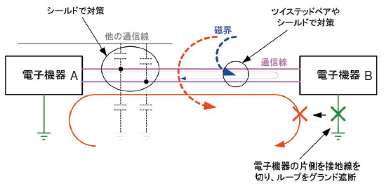

4.8. 通信線からのノイズ
通信線も電源線と同様に行きと帰りの2本の線が必要になります。この行きと帰りの 2本の線間にループが構成されるため、誘導によりノイズを拾いこみます。 周囲に並走する電源線や他の通信線があっても誘導によりノイズを拾いこみます。 通常、シールドやツイステッドペアで対策します。
また、電子機器A-Bのグランドと大地間にもループが形成されることでコモンモードノイズ も発生します。コモンモードノイズ対策として、大地間との間のループが形成されることを避けるた め通信機器の片側を大地から浮かせます。
